Италия
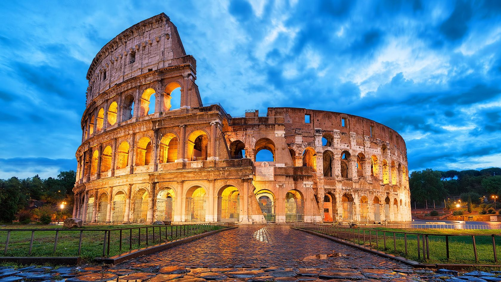
О стране
Итальянская Республика – эта страна расположена в самом центре Средиземноморья. Климат здесь разнится в зависимости от региона: на севере он умеренный, а на юге и в центре страны субтропический средиземноморский. Италия – удивительная страна, в которой переплелись история и современность, различные эпохи и богатое культурное наследие, традиции, самобытность и впечатляющая природа – вот лишь часть того, что ожидает туристов по приезде в эту страну. А главное, что в Италии великолепные пляжи, которые отмечены Голубыми флагами ЮНЕСКО. Местные пейзажи отличаются контрастом: скалистые берега и густая хвойная растительность чередуются песчаными пляжами с пологим берегом, поэтому на итальянском побережье будет комфортно отдыхать даже семьям с маленькими детьми. Коренные жители регионов страны очень простые, открытые и радушные, поэтому чаще всего туристов встречают с улыбкой и охотно делятся своей культурой с приезжими.
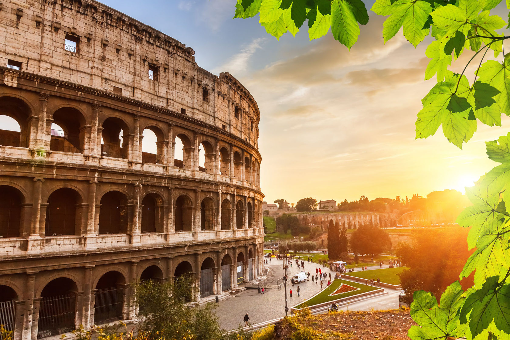
Столица: Рим
Разница во времени (по Москве) - 1 час
Язык: Итальянский
Валюта: Евро
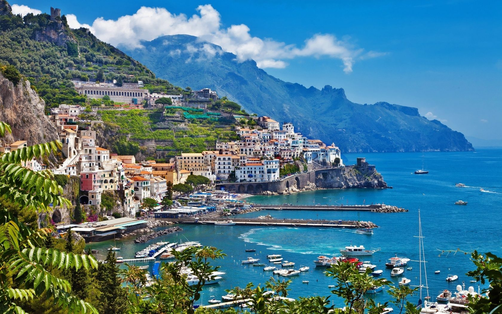
Италия располагается в зоне субтропического средиземноморского климата. Климат здесь разнится в зависимости от региона. На севере он умеренный, а на юге и в центре страны — субтропический средиземноморский. Лето, как правило, жаркое: температура в центре страны в июле держится в районе +22 — +24°С, а зима немного прохладней (в январе около 5 °C).
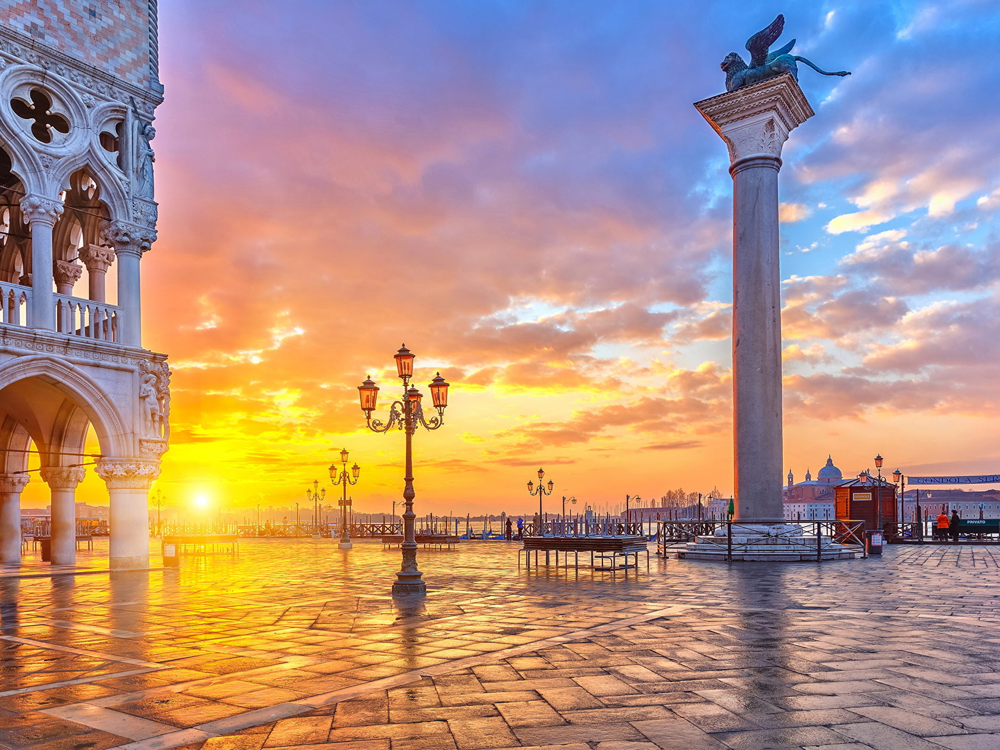
Итальянская кухня традиционно известна во всем мире как одна из самых оригинальных и изысканных. Основа всех национальных блюд – тесто и различные макаронные изделия, большое количество сыра и молочных продуктов, рыбы, зелени и специй, овощей, а также мяса и зерновых культур. Пиццу в Италии готовят буквально в каждом ресторане. К итальянской трапезе обязательно подают вино. В стране множество винных регионов, а количество сортов напитка идет на тысячи. Кулинария превратилась в Италии в национальный культ, а местные мастера достигают в этой области больших высот.
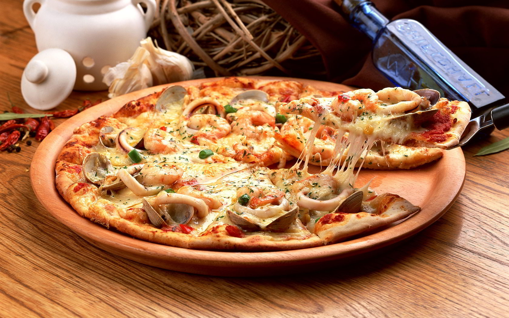
Лигурия
Лигурия – третий из самых маленьких регионов Италии, который дугой расположился на северо-западе страны от границ Франции к Тоскане. Это регион величественных гор, холмов с буйной растительностью и средиземноморского климата. Отвесный скалистый берег открывает отсюда прекрасные виды на Лигурийское море. Однако скалистое побережье чередуется с уютными бухтами, где расположились небольшие пляжи с мелким мягким песком или галькой и пологим входом в воду. За свою чистоту береговой линии пляжи Лигурии были отмечены Голубыми флагами ЮНЕСКО, поэтому здешние места заслуженно полюбились многим отдыхающим, которые часто называют их «итальянской Ривьерой».Этот регион завораживает своим разнообразием и предлагает туристам необыкновенно широкий спектр возможностей для проведения отдыха. Сложно остановить свой выбор на чём-то одном: природа, море, горы, культура, а также развлечения и светская жизнь.
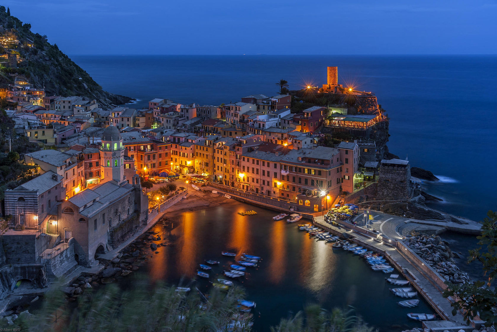
Сицилия
Крупнейший остров Италии, окутанный легендами и слухами, отделен от материка небольшим каналом Стретто-ди-Мессина и омывается сразу тремя морями – Тирренским, Средиземный и Ионическим. Когда-то Сицилия носила название Трикринария, что переводится с греческого «Три мыса» и имеет форму треугольника. Среди природных достопримечательностей острова стоит отметить крупнейший действующий вулкан Этна, или «Гора огня», — самый большой активный вулкан Италии. Невероятная природа и заповедные зоны, роскошные песочные пляжи и великолепная инфраструктура, многочисленные исторические места и взаимопроникновение различных культур – все это о самобытной Сицилии. Побережье пестрит разнообразием: мягкий золотистый песок сменяется мелкой галькой, булыжники — вулканической лавой, размолотой временем в черную пыль.
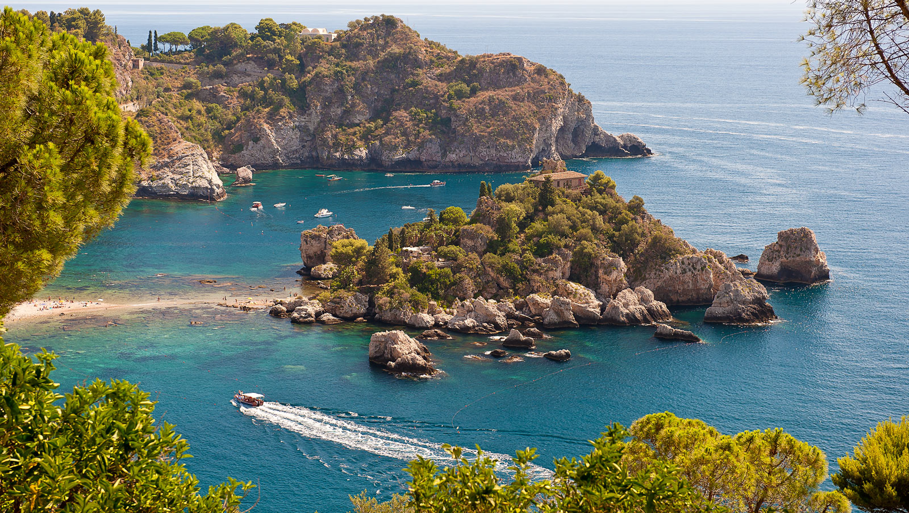
Тоскана
Область Италии, 320 км побережья которого омывается Тирренским морем. Это место можно считать одним из самых колоритных: здесь красота пейзажей Апуанских Альп граничит с бескрайними холмами и виноградниками. Тоскана по праву занимает особое место в списке исторических мест Италии, более половины которых занесены в список объектов всемирного наследия ЮНЕСКО. Тоскана – место происхождения итальянского Ренессанса, и её художественное наследие включает архитектуру, живопись и скульптуру с многими произведениями в музеях целого региона, из которых самые известные – Уффици и Барджелло во Флоренции. Тоскана была родиной Леонардо Да Винчи, Микеланджело и Данте Алигьери. Здесь будет интересно как любителям экотуризма, так и приверженцам пляжного отдыха и дайвинга.
Пляжный отдых в Тоскане славится чистым морем и комфортабельными пляжами, поэтому Тоскана предлагает большое количество морских курортов. Есть пляжи – излюбленные места итальянских знаменитостей, а есть и пляжи с весьма демократичными ценами; пляжи для тихого и семейного отдыха и пляжи с большим количеством кафе и баров.
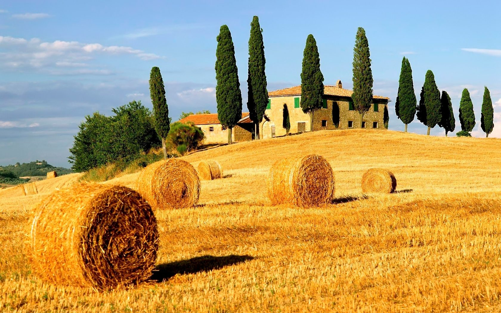
Лацио
Область центральной части Италии, со столицей в городе Рим. В регионе расположено множество древних городов с богатой историей. Особого внимания заслуживает курорт Ривьера ди-Улиссе, береговая линия которого тянется от Рима до Неаполя и хранит в себе связь с античной историей. Эту часть курорта часто именуют «Побережьем Одиссея», так как знаменитый путешественник и герой эпоса Гомера, провел здесь несколько лет, останавливаясь в разных местах.
Ривьра-ди-Улиссе – это более 100 км прекрасных песчаных пляжей, удостоенных Голубого флага ЮНЕСКО за кристальную чистоту морской воды, а песчаные пляжи широкие и просторные, или маленькие и уютные. Здесь длинный купальный сезон, живописная природа и отличные возможности для отдыха. Побережье Одиссея - отличная отправная точка для экскурсионных путешествий по Италии. Отсюда легко добраться до Рима, о. Капри, Понтийских островов, Неаполя, Помпей и других старинных городов региона Лацио.
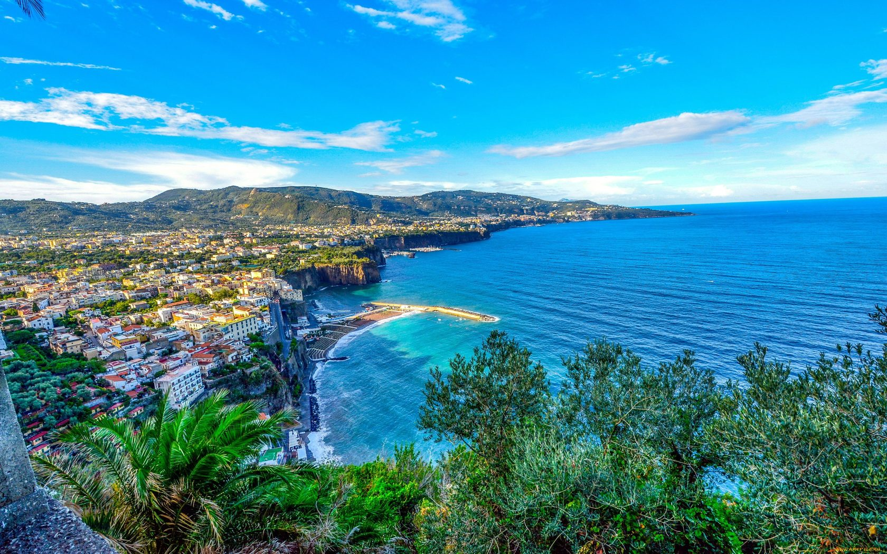
Венето
Регион Италии, располагающийся на северо-востоке страны между Адриатическим морем и Альпами. Венето – еще один удивительный регион Италии: здесь находится один из самых романтических городов всего мира – Венеция и место зарождения любви Ромео и Джульеты – Верона. Для курортов этого региона характерны широкие и песчаные пляжи мелководья. Отельная база курортов чаще всего расположена на первой линии, поэтому на пляжах имеется большой выбор развлечений для семейного отдыха с детьми и молодежными компаниями. Курортная зона Венето может предложить своим гостям весь спектр и многообразие отдыха: песчаные пляжи, уютные отели, удивительные пейзажи с реками, соснами и лесными озерами, хорошая инфраструктура и интересная экскурсионная программа.
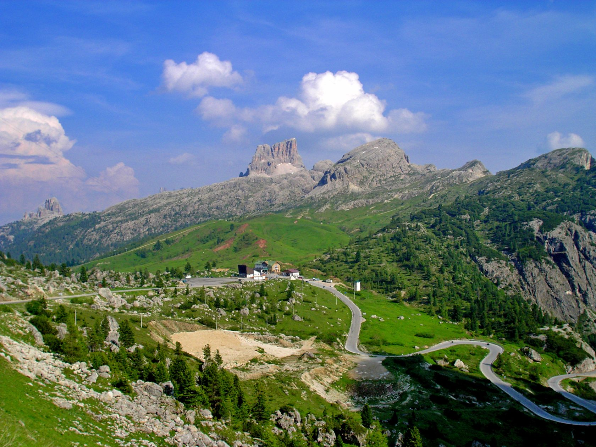
Кампания
Идеальное расположение Кампании на юге Италии, на побережье Тиренского моря, подарило этому региону комфортный средиземноморский климат и буйную растительность плодородных вулканических почв. Этот регион Италии считается одним из самых живописных и экзотических. Именно здесь находится знаменитый вулкан Везувий. Знойное солнце и лучезарное море привлекают сюда любителей пляжного отдыха, поэтому следует обратить внимание на курорты Неаполитанского залива, которые славятся хорошей инфраструктурой. Скалистое побережье в этих местах делает воду кристально прозрачной, что открывает прекрасные возможности для дайвинга.
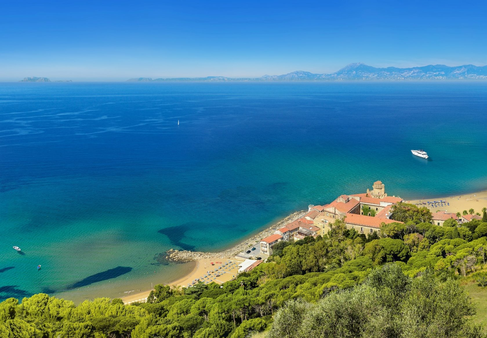
Остров Искья
Искья – считается самым большим островом в Неаполитанском заливе. Остров разделен на территории, одна из которых Искья-Порто. Она отличается насыщенной туристической жизнью. Здесь много отелей разных категорий, коммерческие центры, дискотеки, ночные клубы, таверны, рестораны, бутики. А также прекрасные песчаные пляжи, роскошные сосновые и каштановые рощи. Одна из главных достопримечательностей острова – Арагонский замок, который уместился на конусе застывшей вулканической лавы и является неотъемлемой частью истории острова. В целом ритм жизни на курорте спокойный, поэтому Искья подойдет любителям семейного отдыха, в том числе с маленькими детьми – здесь имеются песчаные пляжи с пологими спусками.
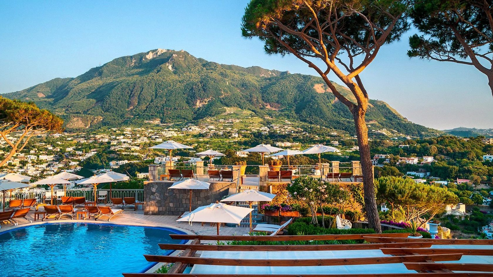
Остров Капри
Этот остров привлекает туристов своей красотой и неповторимостью здешних пейзажей. Остров окружен множеством небольших и укромных бухт. Пляжи здесь в основном галечные или состоят из каменных платформ, спускающихся к морю. Инфраструктура этого места предлагает большое количество магазинов, шумных баров, ресторанов и мест развлечений. А местные отели отличаются хорошим сервисом и высоким уровнем качества предоставляемых услуг, за что это место часто выбирают представители европейской и мировой элиты для своего отдыха.
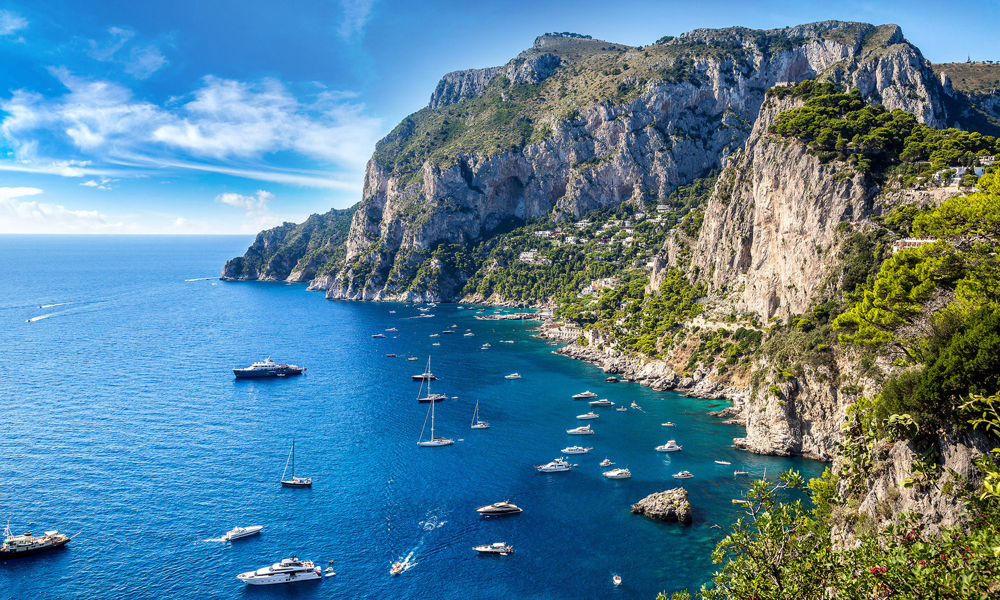
По всем вопросам свяжитесь с нами любым удобным способом:
E-mail: trohin.zh@yandex.ru
Телефон: +7 (977) 730 95 22
Соцсети: Вконтакте | Instagram | Telegram
Индивидуальный предприниматель Трохин Евгений Альбертович
ИНН 503613656680 / ОГРН ИП 315507400016056
город Москва, Щербинка ул. Юбилейная д.3а
Заполните анкету
Мы подберем идеальный тур, исходя из ваших желаний и эмоционального настроя.